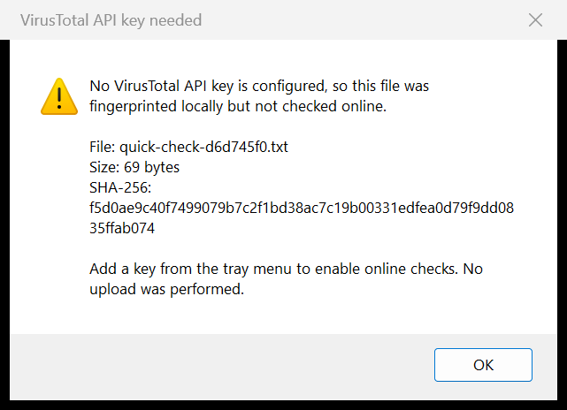

Know what you run, before you run it.
VT Tray sits quietly in your Windows tray, notices new programs in the folders you choose, and checks their fingerprints against VirusTotal. Nothing leaves your PC unless you say so.


How it works
-
1
A new program appears
You download an installer, or a script lands in a folder you watch. VT Tray waits until the file stops changing.
-
2
Its fingerprint is checked
The file is hashed on your PC. Only the SHA-256 is looked up, and the verdict from 70+ engines comes back in seconds.
-
3
You decide about unknowns
If VirusTotal has never seen the file, you can upload it after a clear confirmation. The report opens when the analysis is done.
Features
Hash first
Check any file from the tray or from Explorer. Known files never need an upload.
Consent before every upload
Name, size, fingerprint, and a sharing warning before anything is sent. No is the default.
Folder monitoring
New programs and scripts in watched folders are announced once. Unplugged drives are picked up again when they return.
Explorer menu
Check with VT Tray never uploads. Upload with VT Tray... always asks first.
Stays within the free API
4 requests a minute, 500 a day, 15.5K a month, with 100 a day kept for you and a warning before any limit.
Practically invisible
About 2 MB of private memory and no CPU while idle. The budget is checked on every build.
See it




Private by design
VT Tray has no servers, no accounts, and no telemetry. It talks to VirusTotal and nothing else.
- Only fingerprints are sent unless you confirm an upload.
- Uploads carry the file name, never your folder paths.
- Your API key never appears in logs or settings files.
- Never deletes, quarantines, or changes your files.
- Uninstalling removes every entry, setting, and log it created.
Questions
Is it free?
Yes. VT Tray is open source under the MIT license, and it works with a free VirusTotal account. You bring your own API key.
Will it upload my files automatically?
Never. Monitoring and quick checks only look up fingerprints. An upload always needs your confirmation for that specific file, because VirusTotal shares submitted files with security researchers.
Is it an antivirus?
No. It shows VirusTotal's reputation data so you can decide. It never blocks or removes anything, and results are advisory.
Do I need administrator rights?
No. Setup installs to your user profile, and the app only writes to your own settings.
How do I remove it completely?
Uninstall from Settings > Apps, or choose Remove VT Tray from this PC in its menu. Startup and Explorer entries, the saved key, settings, cache, and logs are all removed.